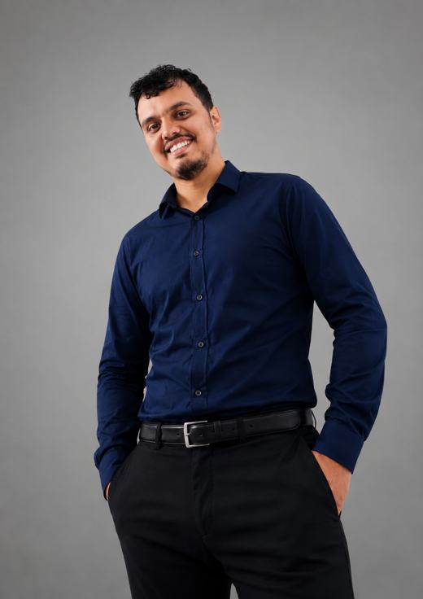

PROYECTO / 01WEB INSTITUCIONAL
Fundación Esperanza
Página institucional de muestra con programas, galería y formulario de voluntariado.
HTML · CSS · JavaScript
Ver demo ↗Desarrollo de software, automatización y soporte TI. Convierto necesidades cotidianas en soluciones tecnológicas claras y útiles.

ADRIÁN PEDROZA MARÍN · INGENIERO DE SISTEMASSoy Ingeniero de Sistemas con experiencia en soporte tecnológico, gestión de información, automatización de procesos y desarrollo de software.
Me interesa crear soluciones prácticas que optimicen procesos y faciliten el trabajo mediante la tecnología. Combino una mirada orientada al servicio con curiosidad por construir y mejorar herramientas digitales.
Una selección de sitios y aplicaciones que muestra soluciones para necesidades de inventario, productividad, finanzas y gestión de información.
Página institucional de muestra con programas, galería y formulario de voluntariado.
Gestor de tareas con creación, filtros y persistencia local en el navegador.
Registro de ingresos y gastos con resumen por categoría y visualización gráfica.
Mini inventario para agregar, buscar, editar y filtrar productos.
Consulta condiciones actuales por ciudad con datos meteorológicos en vivo.
Formulario que genera una vista previa de hoja de vida y permite guardarla como PDF.
Demo de control de existencias por categoría y ubicación, con referencias de bajo stock y vista de personal.
Catálogo demostrativo para repuestos de motocicleta con búsqueda, categorías y control de existencias.
Demos funcionales con datos de muestra. Las páginas para clientes se recrearon para ilustrar los proyectos descritos en la experiencia.
Un conjunto de herramientas para construir, integrar y mantener soluciones.
COTECNOVA · Completar año
COTECNOVA · Completar año
COTECNOVA · Completar año
Añade aquí cursos, certificaciones y fechas relevantes.
Estoy abierto a conversar sobre desarrollo, automatización, soporte tecnológico y oportunidades para resolver problemas con tecnología.
Reemplaza el correo y los enlaces por tus perfiles reales.